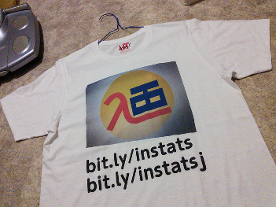
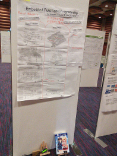
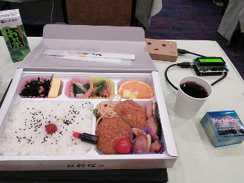

We had “ATS Programming Tutorial” presentation at PPL 2015. I showed “ATS Programming Tutorial” to explain about ATS from ATS2 compiler installation to usage of linear list.
Already, ATS community has following good documents to learn the ATS language.
However, they are sometimes hard for beginner. The goal of the tutorial is to learn to read “Introduction to Programming in ATS” by yourself. I hope the ATS community gets more ATS language users with my tutorial. De-gesso.
  
blog comments powered by